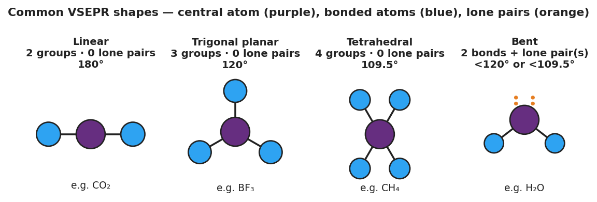

01 Phenomenon
Carbon dioxide (CO₂) and water (H₂O) both have exactly three atoms: one atom in the middle and two atoms on the outside. But their shapes are completely different. CO₂ is perfectly straight — a linear molecule at 180°. Water is bent — the two hydrogen atoms sit at an angle of about 104.5°, like an open pair of scissors. Same number of atoms. Totally different shapes. And that bend in water is the reason water is a liquid you can drink, the reason ice floats, and the reason water dissolves salt and sugar.
02 Driving question
Why is water bent but carbon dioxide linear, when both molecules have exactly three atoms?
03 Notice & wonder
| I notice… | I wonder… |
|---|---|
Turn & Talk #1: Both molecules have one central atom with two atoms attached. The figure shows that water’s oxygen has something the carbon in CO₂ does not. In one sentence, what is on the oxygen in water that is NOT on the carbon in CO₂, and how might it change the shape?
04 Initial model
Before your teacher names the rule: for each molecule below, count the number of atoms bonded to the central atom AND any lone pairs on the central atom. Then use the balloon results to predict the shape. Describe the shape in your own words (straight line? flat triangle? 3-D pyramid?).
| Molecule | Bonded atoms | Lone pairs on center | My shape guess (describe it) |
|---|---|---|---|
| CO₂ | 2 | ||
| BF₃ | 3 | ||
| CH₄ | 4 |
Which molecule did you predict would be a straight line? _______________
Which molecule did you predict would NOT lie flat (a 3-D shape)? _______________
What two pieces of information about the central atom did you need to make your prediction? _______________________________________________
05 Investigate
Part 1 — ABCs: The balloon model
Tie balloons together at their necks and let them settle. Record the shape and angle they form.
| Number of balloons | Shape they form | Angle between them |
|---|---|---|
| 2 | ||
| 3 | ||
| 4 |
What is the pattern? As you add more balloons, what happens to the angle between them?
Make the connection: Balloons push apart to get as far from each other as possible. Electron groups do the same thing. If a central atom has 2 electron groups, predict the shape. 3 groups? 4 groups?
2 groups → _______________ 3 groups → _______________ 4 groups → _______________
Part 2 — Model-building stations
At each station, count the electron groups on the central atom (bonded atoms + lone pairs), build the model, and name the shape using the reference chart.

| Station | Molecule | Bonded atoms | Lone pairs on center | Electron groups | Shape name |
|---|---|---|---|---|---|
| A | CO₂ | ||||
| B | BF₃ | ||||
| C | CH₄ | ||||
| D | H₂O |
Key question: Stations C (CH₄) and D (H₂O) BOTH have 4 electron groups on the central atom. Why is one tetrahedral and the other bent?
06 Make it make sense
For each molecule below, complete the table: count the bonded atoms and lone pairs on the central atom, total the electron groups, and name the shape. These are the same molecules from your Investigation — confirm your work here.
1. CO₂ (central atom: C, double-bonded to 2 oxygens, no lone pairs on C)
| Bonded atoms | Lone pairs on center | Electron groups | Shape name | Bond angle |
|---|---|---|---|---|
2. CH₄ (central atom: C, bonded to 4 hydrogens, no lone pairs on C)
| Bonded atoms | Lone pairs on center | Electron groups | Shape name | Bond angle |
|---|---|---|---|---|
3. H₂O (central atom: O, bonded to 2 hydrogens, 2 lone pairs on O)
| Bonded atoms | Lone pairs on center | Electron groups | Shape name | Bond angle |
|---|---|---|---|---|
4. Explain why CO₂ (3 atoms) and H₂O (3 atoms) end up with different shapes. Use the words lone pair and electron group.
07 Key vocabulary
- VSEPR (Valence Shell Electron Pair Repulsion)
- the model that predicts a molecule's shape from the idea that electron groups (bonds and lone pairs) in the central atom's valence shell repel one another and spread as far apart as possible; counting the electron groups gives the shape
- molecular geometry
- the three-dimensional shape a molecule takes, named by the arrangement of its atoms (linear, bent, trigonal planar, tetrahedral, trigonal pyramidal); determined by the number of electron groups around the central atom
- lone pair
- a pair of valence electrons on the central atom that is not shared in a bond with another atom; lone pairs still occupy space and repel bonded atoms, often bending the molecule (as in water and ammonia)
Use each term in a sentence about today’s investigation. Do not copy the definition — describe something you actually did or observed.
VSEPR: _______________________________________________ _______________________________________________
molecular geometry: _______________________________________________ _______________________________________________
lone pair: _______________________________________________ _______________________________________________
08 Revise your model
Return to your Initial Model (the CO₂ / BF₃ / CH₄ table). Add vocabulary labels:
Above the “Bonded atoms + lone pairs” count for each molecule, write the label “electron groups.”
Circle the molecule that you now know has lone pairs on its central atom from the stations (hint: it was at Station D, not in your Initial Model table). Write its name: _______________
Write a revised appositive sentence for water’s shape:
The molecular geometry of water — ___ — is bent because the oxygen has ___ bonded atoms and ___ lone pairs.
Then finish this Because / But / So sentence:
Carbon dioxide is linear, but water is bent, because __________________________________________, but __________________________________________, so __________________________________________.
09 Exit ticket
(a) Carbon disulfide (CS₂) has a central carbon double-bonded to two sulfur atoms, with no lone pairs on the carbon. Predict and name its molecular shape, and give the bond angle.
Electron groups: ____ Lone pairs on center: ____ Shape: _______________ Angle: _______________
(b) Ammonia (NH₃) has a central nitrogen bonded to three hydrogens, with one lone pair on the nitrogen. Predict and name its molecular shape.
Electron groups: ____ Lone pairs on center: ____ Shape: _______________
(c) In one sentence, explain why two molecules that each contain three atoms can have completely different shapes.
10 Explore further
- Balloon VSEPR demonstration: Tie 2, 3, then 4 balloons together at their necks. Two balloons settle into a straight line (linear, 180°); three spread into a flat triangle (trigonal planar, 120°); four push apart into a 3-D pyramid (tetrahedral, 109.5°). The balloons model electron groups, which repel one another and spread as far apart as possible — exactly what VSEPR predicts. This is the core kinesthetic hook for the Explore phase.
- Molecular model construction: Using a ball-and-stick model kit (or gumdrops + toothpicks), students build CO₂, H₂O, BF₃, CH₄, and NH₃, then measure or estimate the bond angles. Connect each built model to the predicted shape from `figures/vsepr_shape_chart.png`.
- Shape-prediction stations: Set up four stations, each with a Lewis structure and a model kit. Students count electron groups on the central atom (bonds + lone pairs), predict the shape, build it, and check. A Javalab "molecular shapes" simulation (or the PhET *Molecule Shapes* module) can serve as a digital fifth station for early finishers.